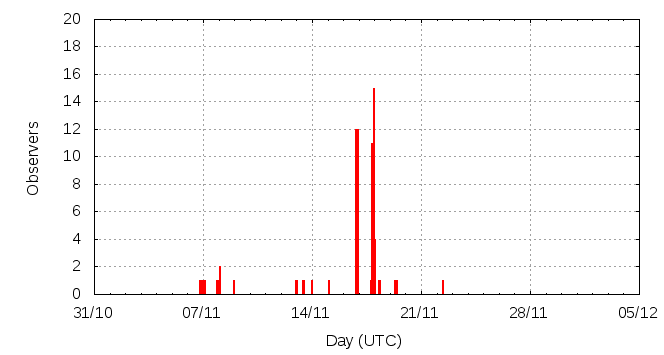

[ www.imo.net ]
This page shows automated results of the Leonids 2015, based on visual observations reported by citizen scientists through the report form of the International Meteor Organization (IMO). The information on this page is generated automatically; for scientific use please refer to manual analyses published in scientific journals (such as WGN). Send your feedback regarding this page to Geert Barentsen.
Page contents:
Note that the data will finally go into the Visual Meteor Database (VMDB) with manual inspection and rectifications. We are curretly completing the files of 2008-2011. The VMDB is an enormous project - any help will be greatly appreciated.
Page generated: 2016 February 29 at 4:50 UTC.
The graph below shows the ZHR (Zenithal Hourly Rate), which is the number of meteors an observer would see under a very dark sky with the radiant of the shower in zenith.
ZHRmax = 19 based on 249 Leonids reported in 176 intervals, assuming population index r = 2.0

| Time (UTC) | Solarlon | nINT | nLEO | ZHR | Particle density | |
|---|---|---|---|---|---|---|
| 2015-11-07 01:51 | 224.110 | 3 | 0 | 2 | ±2 | 3 / 109·km3 |
| 2015-11-08 01:26 | 225.096 | 2 | 3 | 6 | ±3 | 10 / 109·km3 |
| 2015-11-13 09:04 | 230.442 | 5 | 2 | 2 | ±1 | 3 / 109·km3 |
| 2015-11-14 00:33 | 231.091 | 1 | 0 | 7 | ±7 | 11 / 109·km3 |
| 2015-11-16 19:22 | 233.896 | 1 | 0 | 19 | ±19 | 30 / 109·km3 |
| 2015-11-16 19:48 | 233.914 | 23 | 28 | 10 | ±2 | 16 / 109·km3 |
| 2015-11-16 20:48 | 233.956 | 16 | 42 | 12 | ±2 | 19 / 109·km3 |
| 2015-11-16 21:52 | 234.001 | 20 | 26 | 3 | ±1 | 5 / 109·km3 |
| 2015-11-17 20:13 | 234.940 | 18 | 20 | 4 | ±1 | 6 / 109·km3 |
| 2015-11-17 21:22 | 234.988 | 8 | 22 | 9 | ±2 | 14 / 109·km3 |
| 2015-11-17 22:11 | 235.023 | 21 | 23 | 6 | ±1 | 10 / 109·km3 |
| 2015-11-17 23:03 | 235.059 | 35 | 55 | 7 | ±1 | 11 / 109·km3 |
| 2015-11-18 00:50 | 235.134 | 19 | 12 | 8 | ±2 | 13 / 109·km3 |
| 2015-11-19 08:59 | 236.485 | 2 | 5 | 5 | ±2 | 8 / 109·km3 |
| 2015-11-22 10:17 | 239.567 | 2 | 11 | 11 | ±3 | 18 / 109·km3 |
The reported intervals are automatically added together into the bins shown above, based on the number of meteors and the distribution of the intervals. For each bin, the following parameters are computed:
Data has been received from 23 observers in 6 countries. Thank you for your efforts!
Note: click on the map for an interactive version.

| Observer | Country | Teff | nLEO |
|---|---|---|---|
| Jayant Ankamwar | India | 4.00h | 4 |
| Shrinivas Aundhkar | India | 3.38h | 27 |
| Shrinivas Aundhkar | India | 4.00h | 12 |
| Nilesh Dadhale | India | 4.00h | 10 |
| Mayuresh Desai | India | 4.50h | 29 |
| Rohini Jadhav | India | 7.38h | 39 |
| Bhargav Joshi | India | 1.99h | 1 |
| Asmita Kanade | India | 7.38h | 11 |
| Swati Kendre | India | 7.38h | 15 |
| Sneha Kulkarni | India | 2.16h | 1 |
| Swati Malode | India | 3.38h | 1 |
| Alastair Mcbeath | United Kingdom | 8.83h | 3 |
| Harshpriya Pandit | India | 3.38h | 5 |
| Yashodhan Panse | India | 2.16h | 0 |
| Anup Patil | India | 7.38h | 20 |
| Sajana Rathod | India | 7.38h | 20 |
| Pragati Salpe | India | 10.14h | 3 |
| Pragati Salpe | India | 4.00h | 10 |
| Ramani Sanap | India | 3.38h | 7 |
| Yogini Soman | India | 2.16h | 1 |
| Alexandr Maidik | Ukraine | 1.00h | 0 |
| Koen Miskotte | Netherlands | 1.57h | 0 |
| Terrence Ross | United States | 8h | 25 |
| Spandan Waghmare | India | 2.16h | 4 |
| Roland Winkler | Germany | 1.12h | 2 |
Create your own analysis. The files below can be opened using Excel:
leo2015_rate.csv (number of meteors per interval per observer)
leo2015_magn.csv (number of meteors per magnitude bin per observer)
The information on this page may be distributed freely provided credit is given to the International Meteor Organization (IMO) and, when possible, to the individual observers. The computer facilities to generate this page are provided by ESA/RSSD and Armagh Observatory.
References: